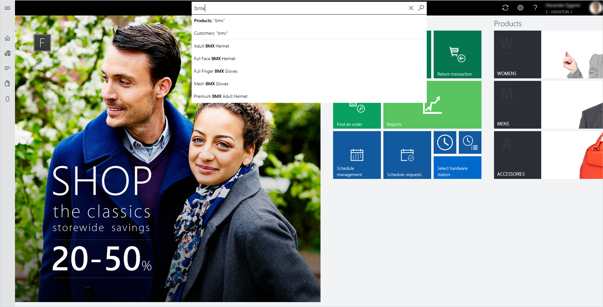
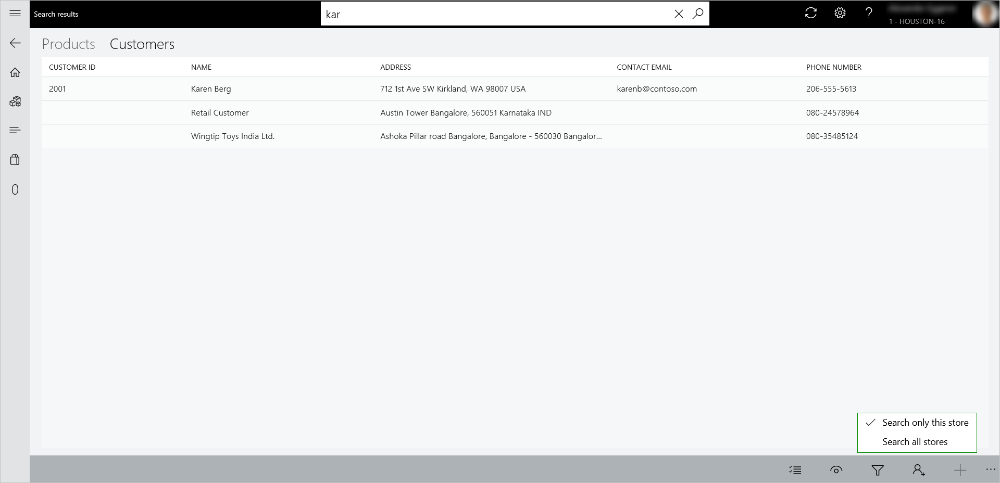
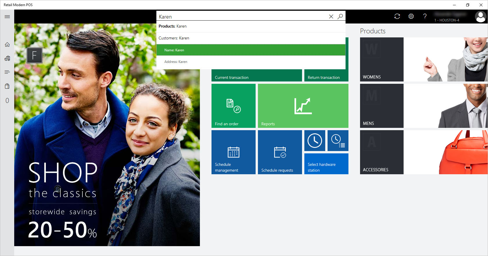
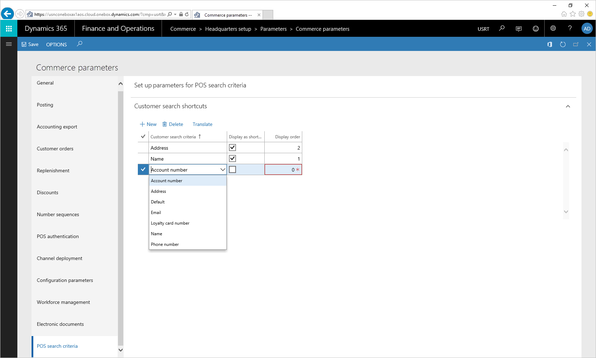

Produktsuche und Debitorensuche in der Verkaufsstelle (POS)
Important
Dynamics 365 Retail ist jetzt Dynamics 365 Commerce und bietet umfassende Handelsfunktionen für alle Kanäle – von E-Commerce über Shops bis hin zu Callcentern. Weitere Informationen zu diesen Änderungen finden Sie unter Microsoft Dynamics 365 Commerce.
Moderne Verkaufsstellen (MPOS) und Cloud-Verkaufsstellen (CPOS) bieten eine benutzerfreundliche Suchfunktion für Produkte und Debitoren. Da die Suchleiste immer oben in den MPOS- und CPOS-Fenstern angezeigt wird, können Mitarbeiter Produkte und Debitoren schnell finden.
Mitarbeiter können nach Produkten in den Sortimenten und Katalogen suchen, die der aktuellen Filiale zugeordnet sind. Sie können auch in den Sortimenten und Katalogen suchen, die irgendeiner anderen Filiale im Unternehmen zugeordnet sind. Daher können Kassierer Produkte außerhalb des Filialsortiments verkaufen und zurückgeben. Entsprechend können Mitarbeiter nach Debitoren suchen, die der aktuellen Filiale oder einer anderen Filiale im Unternehmen zugeordnet sind. Außerdem können Mitarbeiter nach Debitoren suchen, die einem anderen Unternehmen in der übergeordneten Organisation zugeordnet sind.
Produktsuche
Standardmäßig werden Produktsuchen im Filialsortiment ausgeführt. Diese Form der Suche wird als lokale Produktsuche bezeichnet. Allerdings können Mitarbeiter ganz einfach zu einem mit dem aktuellen Shop verknüpften Katalog wechseln oder in verschiedenen Shops suchen. Diese Form der Suche wird als Remote-Produktsuche bezeichnet. Um den Katalog zu ändern, wählen Sie auf der linke Seite die Schaltfläche Kategorien aus. Wählen Sie oben im angezeigten Bereich die Schaltfläche Katalog ändern und dann einen der verfügbaren Kataloge aus, um in diesem zu suchen. Das System durchsucht den ausgewählten Katalog nach Produkten.
Auf der Seite Katalog ändern können Mitarbeiter jeden beliebigen Shop auswählen oder Shop-übergreifend nach Produkten suchen.

Bei der lokalen Produktsuche wird in den folgenden Produkteigenschaften gesucht:
- Produktnummer
- Produktname
- Beschreibung
- Dimensionen
- Strichcode
- Suchbegriff
Erweiterungen von lokalen Produktsuchen
Die Benutzererfahrung bei der lokalen Produktsuche ist jetzt benutzerfreundlicher. Folgende Verbesserungen wurden vorgenommen:
Produkt- und Debitorendropdownmenüs wurden zur Suchleiste hinzugefügt, sodass Mitarbeiter vor einer Suche entweder Produkt oder Debitor auswählen können. Standardmäßig ist Produkt ausgewählt, wie in der folgenden Abbildung gezeigt.
Für Suchen mit mehreren Schlüsselwörtern (also Suchen mit Suchbegriffen) können Einzelhändler konfigurieren, ob die Suchergebnisse Ergebnisse enthalten, die mit irgendeinem Suchbegriff oder mit allen Suchbegriffen übereinstimmen. Die Einstellung für diese Funktion ist im POS-Funktionsprofil in einer neuen Gruppe namens Produktsuche verfügbar. Die Standardeinstellung ist Alle beliebigen Suchbegriffe abgleichen. Diese Einstellung ist auch die empfohlene Einstellung. Wenn die Einstellung Jeden beliebigen Suchbegriff abgleichen verwendet wird, werden alle Produkte, die vollständige oder teilweise mit einem oder mehreren Suchbegriffen übereinstimmen als Ergebnisse zurückgegeben. Diese Ergebnisse werden automatisch in aufsteigender Reihenfolge von Produkten sortiert, die die meisten Schlüsselwortübereinstimmungen haben (vollständig oder teilweise).
Die Einstellung Alle Suchbegriffe abgleichen gibt nur die Produkte zurück, die mit allen Suchbegriffen (ganz oder teilweise) übereinstimmen. Diese Einstellung ist bei langen Produktnamen hilfreich und wenn Mitarbeiter nur begrenzte Produkte in den Sucherergebnissen haben möchten. Für diesen Suchtyp gelten jedoch zwei Einschränkungen:
- Die Suche wird auf Basis einzelner Produkteigenschaften durchgeführt. Beispielsweise werden nur Produkte zurückgegeben, die alle Suchbegriffe in mindestens einer Produkteigenschaft haben.
- Dimensionen werden nicht durchsucht.
Einzelhändler können die Produktsuche nun so konfigurieren, dass Suchvorschläge angezeigt werden, wenn Produktnamen eingegeben werden. Eine neue Einstellung für diese Funktion ist im POS-Funktionsprofil in einer Gruppe namens Produktsuche verfügbar. Die Einstellung hat die Bezeichnung Beim Eingeben Vorschläge anzeigen. Diese Funktion ermöglicht Mitarbeitern, schnell das gesuchte Produkt zu finden, da sie nicht den ganzen Namen eingeben müssen.
Der Produktsuchalgorithmus sucht nun auch in der Suchbegriff-Eigenschaft des Produkts nach den Suchbegriffen.

Debitorensuche
Die Debitorensuche wird verwendet, um Debitoren für verschiedene Zwecke zu suchen. So möchten Kassierer möglicherweise den Wunschzettel oder die Kaufhistorie eines Debitors anzeigen oder den Debitor zu einer Transaktion hinzufügen. Der Suchenalgorithmus passt die Suchbegriffe mit den Werten an, die in den folgenden Debitoreneigenschaften vorhanden sind:
- Name
- E-Mail-Adresse
- Telefonnummer
- Treuekartennummer
- Anschrift
- Kontonummer
Durch diesen Eigenschaften enthält der Name die besonders Flexibilität für Mehrfach-Schlüsselwortsuchen, da der Algorithmus alle Debitoren zurückgibt, die mit einem gefundenen Suchbegriff übereinstimmen. Die Debitoren, die den meisten Suchbegriffen entsprechen, oben in den Ergebnissen angezeigt. Dieses Verhalten unterstützt Kassierer in Situationen, in denen sie eine Suche durch Eingabe des vollständigen Namens durchführen, und Nachname sowie Vorname bei der ursprünglichen Dateneingabe vertauscht wurden. Aus Leistungsgründen behalten alle anderen Eigenschaften die Reihenfolge der Suchbegriffe bei. Wenn der Auftrag per Suchbegriffe nicht dem Auftrag entspricht, der die Daten speichert, werden keine Ergebnisse zurückgegeben.
Standardmäßig wird eine Debitorensuche in den Debitorenadressbüchern durchgeführt, die mit dem Shop verknüpft sind. Diese Form der Suche wird als lokale Debitorensuche bezeichnet. Allerdings können Mitarbeiter auch global nach Debitoren suchen. Sie können also auch in den Shops des Unternehmens und in allen anderen juristischen Personen eine Suche durchführen. Diese Form der Suche wird als Remote-Debitorensuche bezeichnet.
Für eine globale Suche können Mitarbeiter die Schaltfläche Filterergebnisse am unteren Seitenrand auswählen und dann die Option Alle Shops durchsuchen, wie in der folgenden Abbildung gezeigt. In diesem Fall werden nicht nur Debitoren zurückgegeben. Alle Arten von Parteien, die Teil eines Adressbuchs in den Zentralverwaltungen sind, werden ebenfalls zurückgegeben. Zu diesen Parteien zählen Arbeitskräfte, Kreditoren, Mitbewerber und Kontakte.
Note
Für eine Remote-Debitorensuche müssen mindestens vier Zeichen eingegeben werden.
Bei einer Remote-Debitorensuche wird die Debitorenkennung nicht für Debitoren anderer juristischer Personen angezeigt, da für diese Parteien im aktuellen Unternehmen keine Debitorenkennung angelegt wurde. Wenn ein Mitarbeiter jedoch die Debitorendetailseite öffnet, generiert das System automatisch eine Debitorenkennung für die Partei und verknüpft das Debitorenadressbuch des Shops mit dem Debitor. Daher wird der Debitor bei späteren lokalen Shopsuchen angezeigt.

Erweiterungen für lokale Debitorensuche
Suchen, die auf der Telefonnummer basieren, sind vereinfacht worden. Diese Suchen ignorieren nun Sonderzeichen, wie Leerzeichen, Bindestriche und Klammern, die möglicherweise hinzugefügt wurden, wenn der Debitor erstellt wurde. Daher müssen Kassierer sich keine Sorgen über das Telefonnummernformat machen, wenn sie suchen. Wurde beispielsweise die Telefonnummer eines Debitors in der Form 123-456-7890 eingegeben, kann ein Kassierer nach dem Debitor suchen, indem er 1234567890 oder indem er nur die ersten Zahlen einer Telefonnummer eingibt.
Note
Ein Debitor kann mehrere Telefonnummern und mehrere E-Mails haben. Der Debitorensuchalgorithmus durchsucht auch diese sekundären E-Mails und Telefonnummern, aber auf der Ergebnisseite der Debitorensuche werden nur die primären E-Mails und Telefonnummern angezeigt. Dies kann zu Verwirrung führen, da in den Debitorenergebnissen die gesuchte E-Mail-Adresse oder Telefonnummer nicht angezeigt wird. In einem zukünftigen Release planen wir, die Anzeige der Debitorensuchergebnisse zu verbessern, um diese Informationen anzuzeigen.
Die herkömmliche Debitorensuche kann zeitaufwendig sein, da sie über mehrere Felder hinweg sucht. Stattdessen können Kassierer jetzt in einer einzelnen benutzerdefinierten Eigenschaft, wie Name, E-Mail-Adresse oder Telefonnummer suchen. Die Eigenschaften, die der Debitorensuchalgorithmus verwendet, werden zusammen als Debitorensuchkriterien bezeichnet. Der Systemadministrator kann einfach ein oder mehrere Kriterien als Verknüpfungen konfigurieren, die in der POS angezeigt werden. Da die Suche auf ein einziges Kriterium eingeschränkt ist, werden nur die relevanten Suchergebnisse angezeigt, und die Leistung ist viel besser, als die Leistung bei einer standardmäßigen Debitorensuche. Die folgende Abbildung zeigt die Debitorensuchverknüpfungen in POS an.

Um Suchkriterien als Verknüpfungen festzulegen, muss der Administrator die Seite Commerce Parameter in Commerce öffnen und dann auf der Registerkarte POS-Suchkriterien alle Kriterien auswählen, die als Verknüpfungen angezeigt werden sollen.

Note
Wenn Sie zu viele Verknüpfungen hinzufügen, wird das Dropdownmenü in der Suchleiste in POS überladen, und die Sucherfahrung des Mitarbeiters kann beeinträchtigt werden. Es wird empfohlen, dass Sie nur so viele Verknüpfungen hinzufügen, wie Sie benötigen.
Das Feld Reihenfolge anzeigen bestimmt die Reihenfolge, in der Verknüpfungen in POS angezeigt werden. Die angezeigten Kriterien sind die vorkonfigurierten Eigenschaften, die der Debitorensuchalgorithmus verwendet, um nach Debitoren zu suchen. Allerdings können Partner benutzerdefinierte Eigenschaften als Suchenverknüpfungen hinzufügen. Um benutzerdefinierte Eigenschaften als Suchverknüpfungen hinzuzufügen, muss der Systemadministrator die erweiterbare Enumeration (Enum), die für die Debitorensuchkriterien verwendet wird, erweitern und dann die benutzerdefinierten Eigenschaften des Partners als Verknüpfungen markieren. Partner sind dafür zuständig, den Code zu schreiben, um die Ergebnisse zu finden, wenn ihre benutzerdefinierten Verknüpfungen für Suchen verwendet werden.
Note
Eine benutzerdefinierte Eigenschaft, die der Enumeration hinzugefügt wird, wirkt sich nicht den standardmäßigen Debitorensuchenalgorithmus aus. Das bedeutet, dass der Debitorensuchalgorithmus nicht in der Debitoreneigenschaft suchen wird. Benutzer können nur eine benutzerdefinierte Eigenschaft für Suchvorgänge verwenden, wenn diese benutzerdefinierte Eigenschaft als Verknüpfung hinzugefügt ist oder wenn der Standardsuchenalgorithmus überschrieben wird.
In einer bevorstehenden Veröffentlichung von Commerce sind Einzelhändler in der Lage, den Standard-Debitorensuchmodus in POS auf Alle Shops durchsuchen festzulegen. Diese Konfiguration kann in Szenarios hilfreich sein, bei denen Debitoren, die außerhalb POS erstellt wurden, umgehend gefunden werden müssen (zum Beispiel selbst bevor der Verteilungseinzelvorgang ausgeführt wird). Eine neue Option Standarddebitoren-Suchmodus ist im POS-Funktionsprofil verfügbar. Legen Sie diese auf Aktiviert fest, um den Standardsuchmodus auf Alle Shops durchsuchen festzulegen. Jeder Debitorensuchenversuch macht dann einen Echtzeitanruf an den Hauptsitz.
Um unerwartete Leistungsabgänge zu verhindern, ist diese nach Konfiguration hinter einer Flight-Markierung verborgen, die lautet CUSTOMERSEARCH_ENABLE_DEFAULTSEARCH_FLIGHTING Um die Einstellungen Standarddebitoren-Suchenmodus der Benutzerschnittstelle anzuzeigen, sollte der Einzelhändler ein Supportticket für die Benutzerakzeptanztests (UAT) und die Produktumgebung erstellen. Nachdem das Ticket empfangen wurde, arbeitet das Technikteam bei dem Einzelhändler, um sicherzustellen, dass der Einzelhändler Tests in der Nicht-Produktionsumgebung durchführt, um die Leistung zu ermitteln und alle Optimierungen zu implementieren, die erforderlich sind.